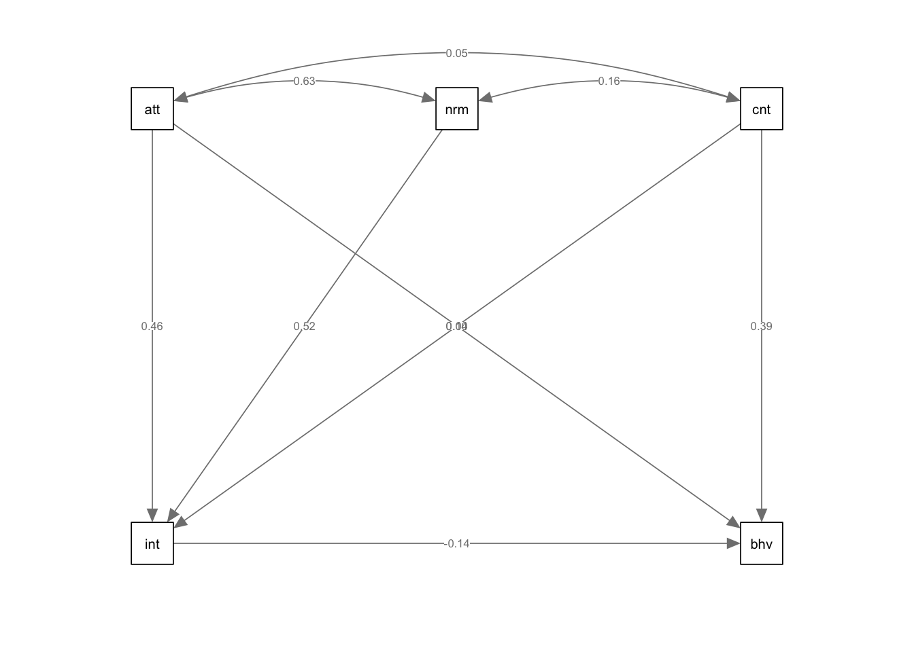

Content
We will be using the following packages in this week’s workbook. If
you’ve been following along with the demonstrations, this is the first
time we’ve used the lavaan and semPlot
packages, so make sure to install these first before loading them. The
lavaan package includes functions that allow us to conduct
the analyses, while the semPlot package includes functions
that allows us to visualise path diagrams.
library(lavaan)
library(tidyverse)
library(semPlot)Before We Continue…
We are about to start using the lavaan package, which is
used for path analyses and structural equation models. This workbook is
only meant to serve as an introduction to the lavaan
package, and therefore we will only discuss some of the basic functions.
You are able to add a lot of complexity to structural equation models
that we will not be touching. If you truly wish to master this package,
you will need to go beyond the content covered here.
Mediation Analysis Through Structural Equation Modelling (SEM)
Mediation is an example of a simple SEM. We will first re-run the
mediation we conducted in Demonstration 8 in the lavaan
package, as this is a handy way of demonstrating the logic of the
lavaan package. As a reminder, we predict that the
association between exercise attitudes and exercise behaviour is
mediated by the intention to exercise.
As with all analyses, we will be following the basic procedure of:
- Clean the data for analysis.
- Run the statistical test.
- Plot the data.
- Write-up analysis.
1. Clean the data for analysis.
As always, our first step is to calculate the variables from the individual items.
The code below is identical to the code used for the mediation in Week 8 and used to calculate exercise attitude, intentions to exercise, and exercise behaviour.
data2.clean <- data %>%
mutate(attitude = exercise.attitude.1 + exercise.attitude.2 + exercise.attitude.3 + exercise.attitude.4 + exercise.attitude.5,
intention = exercise.intention.1 + exercise.intention.2 + exercise.intention.3 + exercise.intention.4 + exercise.intention.5,
behaviour = exercise.behaviour.1 + exercise.behaviour.2 + exercise.behaviour.3 + exercise.behaviour.4 + exercise.behaviour.5) %>%
dplyr::select(student.no,attitude,intention,behaviour) %>%
filter(!is.na(attitude)) %>%
filter(!is.na(intention)) %>%
filter(!is.na(behaviour))2. Run statistical test.
Previously, when specifying a regression formula in R, we have used the following form:
y ~ x1 + x2 + x3 + …
An SEM formula is an extention of of this, where multiple regression
equations (or similar relationships) are estimated at once. Like with a
regression, we use the ~ to specify a relationship between
an outcome (on the left), and predictors (on the right).
In the table below are some other relationships that you may use when constructing a SEM.
| operator | relationship type | example | explanation |
|---|---|---|---|
=~ |
Latent Variable | y =~ x1 + x2 + x3… | y is measured by x1, x2, x3, etc. |
~~ |
Covariance | x1 ~~ x2 | x1 is correlated with x2 |
:= |
Define Parameter | effect := a*b | Estimate ‘effect’ which is made up of ‘a’ times ‘b’ |
Note: you can also label parameters by using the *
symbol before variables. If you give two variables the same label, it
will force the estimates to be the same (this comes in handy sometimes,
but not something we will use in this workbook). Note: the label you
give cannot have the same name as a variable in the data.frame
(otherwise R will think you are referring to that variable and multiply
to two together!).
Below is the formula to conduct a mediation analysis identical to the one we conducted in Workbook 8. See if you can understand each line and what relationship it is specifying before reading the breakdown. Remember, each line of code can be read as relationships between variables in the model.
sem.formula <- '
behaviour ~ c*attitude
behaviour ~ b*intention
intention ~ a*attitude
indirect := a*b
direct := c
total := direct + indirect
'Let’s break this down:
| line | explanation |
|---|---|
| behaviour ~ c*attitude | Behaviour is predicted from attitude, and this relationship is labelled ‘c’ |
| behaviour ~ b*intention | Behaviour is predicted from intention, and this relationship is labelled ‘b’ |
| intention ~ a*attitude | Intention is predicted from attitude, and this relationship is labelled ‘a’ |
| indirect := a*b | Define a parameter called ‘indirect’ which is made up of ‘a’ times ‘b’ |
| direct := c | Define a parameter called ‘direct’ which is made up of ‘c’ |
| total := direct + indirect | Define the total effect (the combination of direct and indirect effect). |
Essentially, the first three lines of the code are identical to
running the Model 1, Model 2, and
Model 3 that we ran when testing whether the conditions of
mediation were met, while the last three lines are like running the
mediate() function to get estimates for the indirect and
direct effect.
To run the SEM, we use the sem() function. Like all
analyses done previously, we need to specify two things: the formula
(which we saved as the object sem.formula) and the
data.frame. We also set values for a few other arguments. We set
‘standardized’ to TRUE so that we get standardised
estimates, ‘fit.measures’ to TRUE so we get model fit
indicators, and ‘rsquare’ to TRUE to get an r-square
statistics for the model.
med.sem.model <- sem(sem.formula,data2.clean)summary(med.sem.model,standardized = TRUE, fit.measures = TRUE, rsquare = TRUE)## lavaan 0.6.16 ended normally after 1 iteration
##
## Estimator ML
## Optimization method NLMINB
## Number of model parameters 5
##
## Number of observations 79
##
## Model Test User Model:
##
## Test statistic 0.000
## Degrees of freedom 0
##
## Model Test Baseline Model:
##
## Test statistic 27.304
## Degrees of freedom 3
## P-value 0.000
##
## User Model versus Baseline Model:
##
## Comparative Fit Index (CFI) 1.000
## Tucker-Lewis Index (TLI) 1.000
##
## Loglikelihood and Information Criteria:
##
## Loglikelihood user model (H0) -500.048
## Loglikelihood unrestricted model (H1) -500.048
##
## Akaike (AIC) 1010.096
## Bayesian (BIC) 1021.944
## Sample-size adjusted Bayesian (SABIC) 1006.178
##
## Root Mean Square Error of Approximation:
##
## RMSEA 0.000
## 90 Percent confidence interval - lower 0.000
## 90 Percent confidence interval - upper 0.000
## P-value H_0: RMSEA <= 0.050 NA
## P-value H_0: RMSEA >= 0.080 NA
##
## Standardized Root Mean Square Residual:
##
## SRMR 0.000
##
## Parameter Estimates:
##
## Standard errors Standard
## Information Expected
## Information saturated (h1) model Structured
##
## Regressions:
## Estimate Std.Err z-value P(>|z|) Std.lv Std.all
## behaviour ~
## attitude (c) 0.572 0.167 3.423 0.001 0.572 0.398
## intention (b) -0.162 0.140 -1.159 0.247 -0.162 -0.135
## intention ~
## attitude (a) 0.516 0.121 4.250 0.000 0.516 0.431
##
## Variances:
## Estimate Std.Err z-value P(>|z|) Std.lv Std.all
## .behaviour 40.856 6.501 6.285 0.000 40.856 0.870
## .intention 26.407 4.202 6.285 0.000 26.407 0.814
##
## R-Square:
## Estimate
## behaviour 0.130
## intention 0.186
##
## Defined Parameters:
## Estimate Std.Err z-value P(>|z|) Std.lv Std.all
## indirect -0.084 0.075 -1.118 0.264 -0.084 -0.058
## direct 0.572 0.167 3.423 0.001 0.572 0.398
## total 0.489 0.152 3.213 0.001 0.489 0.340If we compare the results here to mediation, we should see that we get very similar, if not the same, results.
3. Plot the model.
The easiest way to plot a structural equation model is using a path
diagram. Unfortunately, this is not easy to do in ggplot2.
However, we can use the semPaths() function from the
semPlot package. This function has the advantage of being
easy to use - all you need to do is load your model estimated in laavan
and specify which paths you want to see (or hide). The disadvantage is
that editing the layout or customising the look of your path diagram can
be difficult. Therefore, in order to create publication worthy graphics,
you may want to recreate the diagram in another program.
semPaths(med.sem.model,whatLabel = "std",intercept = FALSE,residuals = FALSE)
More complicated Path Analysis
We will now have a go at conducting a more complicated SEM. We will continue investigating the relationship between attitudes to exercise, intentions to exercise, and exercise behaviour, but also now investigate norms surrounding fitness and perceived behavioural control. The model we will fit is based on the Theory of Planned Behaviour, and is depicted below.

In words, we predict that attitudes towards exercise, norms about exercise, and perceived behavioural control regarding exercise will predict intention to exercise. In turn, intention to exercise predicts exercise behaviour. We also predict that perceived behavioural control regarding exercise will directly predict exercise behaviour.
1. Clean the data for analysis.
First, we must calculate the variables from each of the items. Something we have done many times now.
data2.clean <- data %>%
mutate(attitude = exercise.attitude.1 + exercise.attitude.2 + exercise.attitude.3 + exercise.attitude.4 + exercise.attitude.5,
intention = exercise.intention.1 + exercise.intention.2 + exercise.intention.3 + exercise.intention.4 + exercise.intention.5,
control = exercise.control.1 + exercise.control.2 + exercise.control.3,
norms = exercise.norms.1 + exercise.norms.2 + exercise.norms.3 + exercise.norms.4 + exercise.norms.5,
behaviour = exercise.behaviour.1 + exercise.behaviour.2 + exercise.behaviour.3 + exercise.behaviour.4 + exercise.behaviour.5) %>%
dplyr::select(student.no,attitude,intention,control,norms,behaviour) %>%
filter(!is.na(attitude)) %>%
filter(!is.na(intention)) %>%
filter(!is.na(control)) %>%
filter(!is.na(norms)) %>%
filter(!is.na(behaviour))2. Run statistical test.
First, we need to specify the model. Below, this model is specified
as formula that lavaan can read:
model <- '
intention ~ attitude + norms + control
norms ~~ attitude
attitude ~~ control
control ~~ norms
behaviour ~ intention + control
'To break down the code above: Line 1: Attitudes, norms, and control predict intention. Lines 2 to 4: Covariance between predictors is specified explicitly. Line 5: Intention, control and attitudes predicts behaviour.
We then run the SEM model using the sem() function:
sem.model <- sem(model,data = data2.clean)summary(sem.model,standardized = TRUE,fit = TRUE, rsquare = TRUE)## lavaan 0.6.16 ended normally after 47 iterations
##
## Estimator ML
## Optimization method NLMINB
## Number of model parameters 14
##
## Number of observations 79
##
## Model Test User Model:
##
## Test statistic 0.330
## Degrees of freedom 1
## P-value (Chi-square) 0.565
##
## Model Test Baseline Model:
##
## Test statistic 87.526
## Degrees of freedom 10
## P-value 0.000
##
## User Model versus Baseline Model:
##
## Comparative Fit Index (CFI) 1.000
## Tucker-Lewis Index (TLI) 1.086
##
## Loglikelihood and Information Criteria:
##
## Loglikelihood user model (H0) -1191.419
## Loglikelihood unrestricted model (H1) -1191.254
##
## Akaike (AIC) 2410.838
## Bayesian (BIC) 2444.011
## Sample-size adjusted Bayesian (SABIC) 2399.868
##
## Root Mean Square Error of Approximation:
##
## RMSEA 0.000
## 90 Percent confidence interval - lower 0.000
## 90 Percent confidence interval - upper 0.247
## P-value H_0: RMSEA <= 0.050 0.602
## P-value H_0: RMSEA >= 0.080 0.347
##
## Standardized Root Mean Square Residual:
##
## SRMR 0.011
##
## Parameter Estimates:
##
## Standard errors Standard
## Information Expected
## Information saturated (h1) model Structured
##
## Regressions:
## Estimate Std.Err z-value P(>|z|) Std.lv Std.all
## intention ~
## attitude 0.506 0.098 5.142 0.000 0.506 0.424
## norms 0.443 0.066 6.714 0.000 0.443 0.543
## control -0.094 0.120 -0.784 0.433 -0.094 -0.065
## behaviour ~
## intention -0.083 0.127 -0.660 0.510 -0.083 -0.069
## control 0.750 0.170 4.419 0.000 0.750 0.430
## attitude 0.395 0.155 2.548 0.011 0.395 0.275
##
## Covariances:
## Estimate Std.Err z-value P(>|z|) Std.lv Std.all
## attitude ~~
## norms 1.351 3.747 0.361 0.718 1.351 0.041
## control 4.149 2.159 1.921 0.055 4.149 0.221
## norms ~~
## control -2.890 3.105 -0.931 0.352 -2.890 -0.105
##
## Variances:
## Estimate Std.Err z-value P(>|z|) Std.lv Std.all
## .intention 16.480 2.622 6.285 0.000 16.480 0.508
## .behaviour 32.759 5.212 6.285 0.000 32.759 0.697
## attitude 22.721 3.615 6.285 0.000 22.721 1.000
## norms 48.743 7.756 6.285 0.000 48.743 1.000
## control 15.452 2.459 6.285 0.000 15.452 1.000
##
## R-Square:
## Estimate
## intention 0.492
## behaviour 0.303Notice above in the summary() function, we have included
the additional arguments to get extra statistics that are helpful when
it comes to report the analysis.
3. Plot the model.
Again, we use semPaths() to plot our SEM model. Here,
the limitations of not being able to easily organise the layout of your
plot is apparent, though it still may be helpful to visualise your
results to help your understanding.
semPaths(sem.model,whatLabel = "std",intercept = FALSE,residuals = FALSE)
Model Comparisons
Model comparisons can be used to help decide which model best explains your data with the fewest number of parameters. As covered in the lecture series, models can only be compared if they are nested (i.e., one model must be contained within the other model). For SEM, using model comparisons is particularly useful to determine the significance of individuals paths.
In the example below, we will compare the model above with a simpler model, where the path between control and behaviour is removed. The formula and code to conducted this slightly simpler model is as follows:
model2 <- '
intention ~ attitude + norms + control
norms ~~ attitude
attitude ~~ control
control ~~ norms
behaviour ~ intention
'
sem.model2 <- sem(model2,data = data2.clean)
#summary(sem.model2,standardized = TRUE,fit = TRUE, rsquare = TRUE)Note: we have not run the summary() function above to
save on space, but feel free to have a look at it.
Now that we have our two models that we will compare, the function we
use is called anova(), not to be confused with
aov() that runs ANOVA analyses.
For the anova() function, we simply have to specify the
two models we are comparing as the two arguments. This will conduct a
chi-square difference test.
anova(sem.model,sem.model2)##
## Chi-Squared Difference Test
##
## Df AIC BIC Chisq Chisq diff RMSEA Df diff Pr(>Chisq)
## sem.model 1 2410.8 2444.0 0.3305
## sem.model2 3 2435.2 2463.7 28.7077 28.377 0.40859 2 6.886e-07 ***
## ---
## Signif. codes: 0 '***' 0.001 '**' 0.01 '*' 0.05 '.' 0.1 ' ' 1Above, we find that there is a significant difference between the two models. Therefore, we can conclude that dropping the path between ‘control’ and ‘behaviour’ significantly reduces model fit. As such, we should retain this path in the model.
While above, we use the anova() function to test the
difference between nested SEM models, we can also use this function to
compare models from other functions, such as lm().
Introducing Latent Variables
Up to now, to calculate variables from individual items, we have been adding each item up. However, we could also compute latent variables, which are the underlying variables that each item is meant to tap into. Essentially, this is conducting a Confirmatory Factor Analysis.
For example, we could calculate the latent variable ‘norms’ from each of the individual items.
attitude.formula <- '
attitude =~ exercise.attitude.1 + exercise.attitude.2 + exercise.attitude.3 + exercise.attitude.4 + exercise.attitude.5
'
attitude.model <- sem(attitude.formula,data = data)summary(attitude.model,standardized = TRUE)## lavaan 0.6.16 ended normally after 24 iterations
##
## Estimator ML
## Optimization method NLMINB
## Number of model parameters 10
##
## Number of observations 79
##
## Model Test User Model:
##
## Test statistic 11.134
## Degrees of freedom 5
## P-value (Chi-square) 0.049
##
## Parameter Estimates:
##
## Standard errors Standard
## Information Expected
## Information saturated (h1) model Structured
##
## Latent Variables:
## Estimate Std.Err z-value P(>|z|) Std.lv Std.all
## attitude =~
## exercis.tttd.1 1.000 0.896 0.854
## exercis.tttd.2 1.189 0.161 7.379 0.000 1.065 0.761
## exercis.tttd.3 0.219 0.273 0.803 0.422 0.196 0.096
## exercis.tttd.4 0.918 0.113 8.095 0.000 0.822 0.827
## exercis.tttd.5 1.136 0.179 6.332 0.000 1.018 0.674
##
## Variances:
## Estimate Std.Err z-value P(>|z|) Std.lv Std.all
## .exercis.tttd.1 0.298 0.080 3.708 0.000 0.298 0.270
## .exercis.tttd.2 0.824 0.165 4.995 0.000 0.824 0.421
## .exercis.tttd.3 4.111 0.655 6.277 0.000 4.111 0.991
## .exercis.tttd.4 0.312 0.075 4.184 0.000 0.312 0.316
## .exercis.tttd.5 1.246 0.226 5.523 0.000 1.246 0.546
## attitude 0.803 0.181 4.446 0.000 1.000 1.000semPaths(attitude.model,whatLabel = "std",intercept = FALSE,residuals = FALSE)How about we compute latent variables for all the variables in the TPB model above? Doing something like this may not make a lot of sense: we will end up with a gangly model, and we may not have enough observations to get sensible results, but we can do it do it anyway! For demonstrative purposes of course… The code is provided below to run this analysis, but this code is not executed, as the output is quite long an unweildy.
Specify the Model
model <- '
attitude =~ exercise.attitude.1 + exercise.attitude.2 + exercise.attitude.3 + exercise.attitude.4 + exercise.attitude.5
intention =~ exercise.intention.1 + exercise.intention.2 + exercise.intention.3 + exercise.intention.4 + exercise.intention.5
control =~ exercise.control.1 + exercise.control.2 + exercise.control.3
norms =~ exercise.norms.1 + exercise.norms.2 + exercise.norms.3 + exercise.norms.4 + exercise.norms.5
behaviour =~ exercise.behaviour.1 + exercise.behaviour.2 + exercise.behaviour.3 + exercise.behaviour.4 + exercise.behaviour.5
intention ~ attitude + norms + control
behaviour ~ intention + control
'We won’t run the summary() just now because it is very
unwieldy, but we have covered the interpretation of the output
above.
sem.model3 <- sem(model,data = data)
summary(sem.model3,standardized = TRUE,fit = TRUE, rsquare = TRUE)